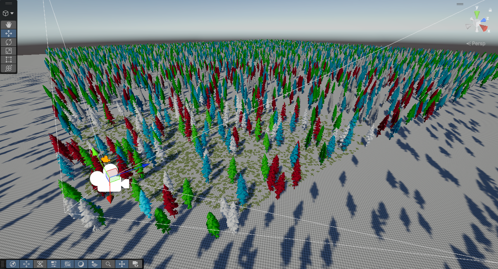
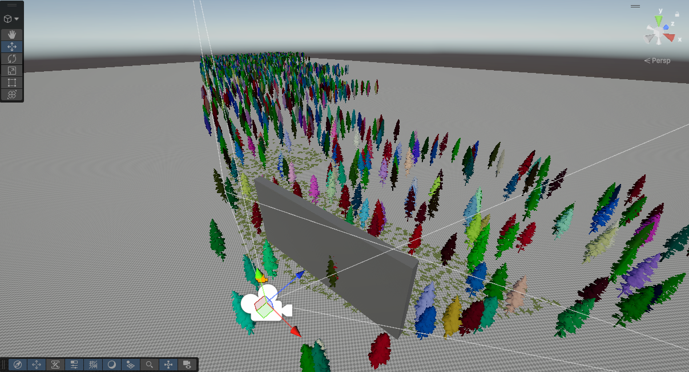
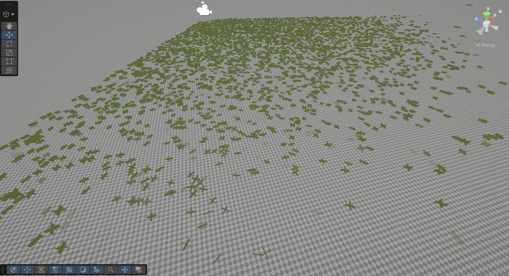

Culling
BRG Instanced Renderer uses a multi-level GPU-driven culling pipeline to ensure only visible instances consume rendering resources. All culling runs entirely on the GPU via compute shaders, keeping CPU overhead near zero regardless of instance count.
Six types of culling work together in a hierarchical pipeline:
Frustum Culling
Instances outside the camera's field of view are excluded. Tested at both the chunk level and per-instance level for maximum efficiency.

Occlusion Culling
Chunks fully hidden behind occluders are skipped using Unity's baked occlusion data. Enable via Use BRG Occlusion Culling on the Config.

Distance Culling
Instances beyond a configurable distance are not rendered. Set per-group via BRG Instance Group or per-terrain via BRG Terrain Registerer.
Screen-Size Culling
Instances too small on screen are culled automatically, with optional fade-out. Configured per-prefab via BRG Prototype Extra Data / LOD Overrides.
Dynamic Density Culling
Gradually thins out instances at distance using a deterministic hash. It helps as both a performance optimization, as well as a way to help make detail render distance blend more naturally. See Dynamic Density for details.

Shadow Culling
Shadow rendering has its own dedicated culling pass, with per-cascade frustum testing and per-prototype cascade limits. See Shadow Optimization for details.
For culling settings, see BRG Instanced Renderer Config and BRG Prototype Extra Data / Density.
Tip
Culling can be viewed in scene view by ticking Debug Visualize Culling In Scene View in your Config file!